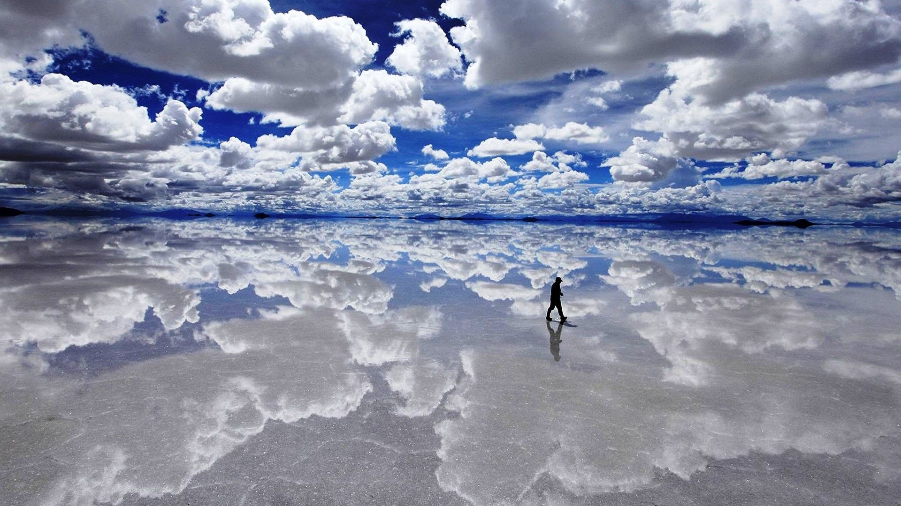
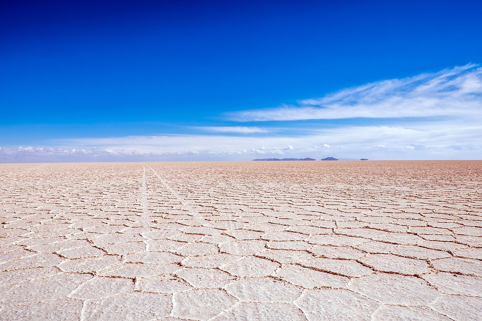
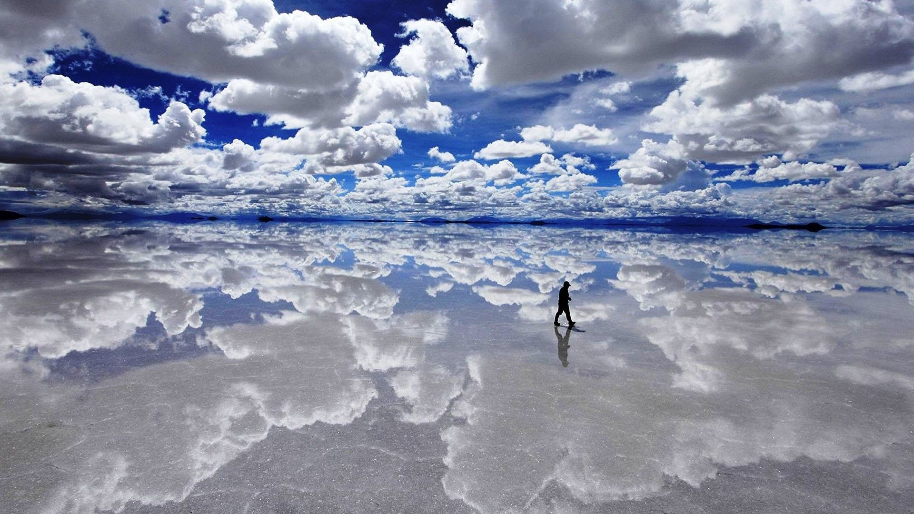
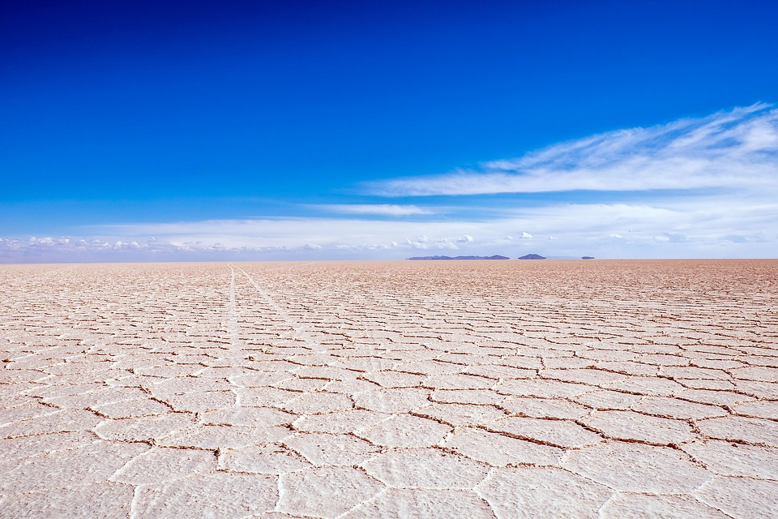
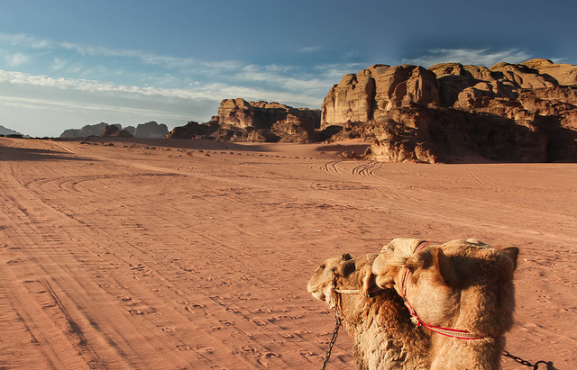
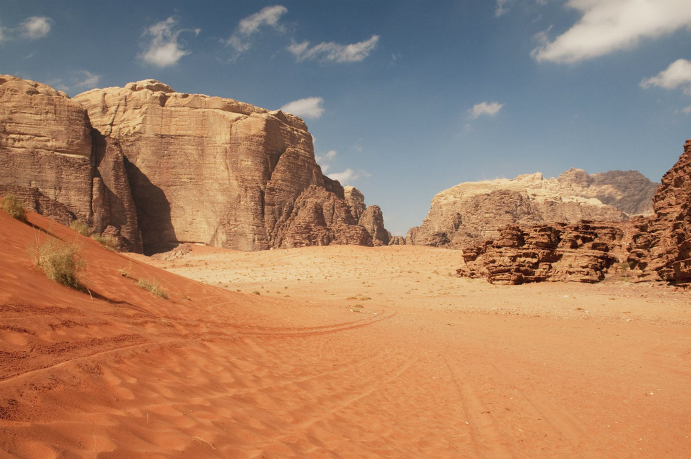
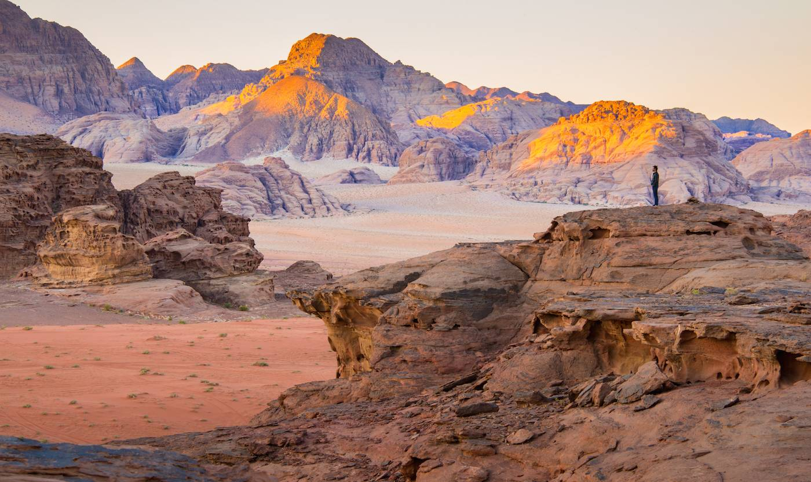
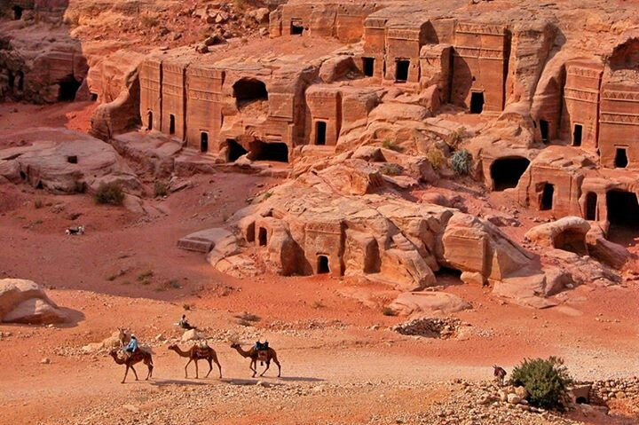
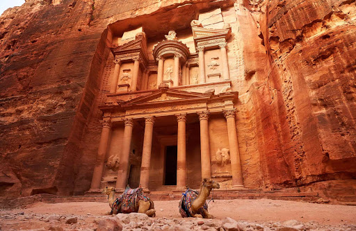
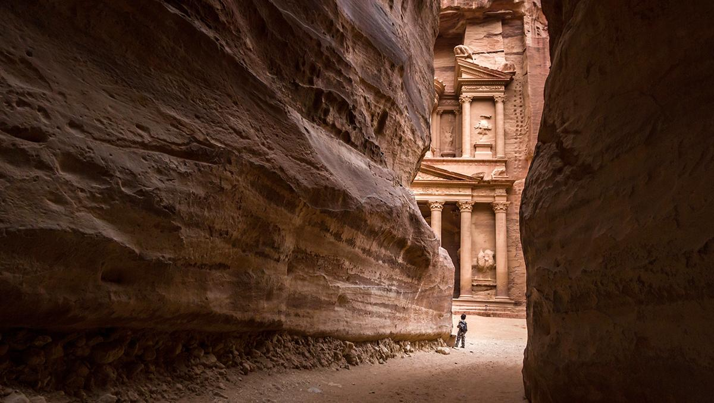

   
| Uyuni
Salar de Uyuni
Departamento de Potosí, Bolivia Central
Es el mayor desierto de sal continúo del mundo, más de 10.500 kilómetros cuadrados de sal en pleno Altiplano boliviano, a 3600 metros por encima del nivel del mar. En época de lluvias, el salar se convierte en un gigantesco espejo y el cielo es imposible de distinguir de la tierra. El salar de Uyuni es una de las mecas que todo gran viajero debe visitar al menos una vez en la vida, una de esas chinchetas que sí o sí deberías marcar en el mapamundi de tu casa. Una llanura blanca infinita, uno de los desiertos más espectaculares de toda Sudamérica, y sin duda una imagen de las que se graban en la retina para siempre. Si solo dispones de un día la población más cercana al salar es Uyuni y desde aquí se organizan excursiones de ida y vuelta en el mismo día. Toda visita al salar suele incluir una parada en la isla de Incahuasi o en la isla del Pescado, pequeños montes compuestos por corales petrificados y repletos de cactus desde donde se obtienen vistas de toda la inmensidad del salar.
Para entender el salar de Uyuni hay que irse muchos muchos años atrás, cuando todo esto era un lago de agua salada. El Tauca, el lago más reciente, estaba aquí hace unos 11.000 años. Con la evaporación del agua solo quedó la sal que vemos hoy día, dispuesta en unas diez capas diferentes de entre uno y diez metros de grosor, siendo la que pisamos con nuestros pies de entre diez y doce metros de espesor. La estación seca va de mayo a noviembre y las lluvias son escasas. El salar es un desierto seco, blanco y liso, donde la cristalización de la sal crea dibujos geométricos en la superficie. Es el momento perfecto para pasar un tiempo haciendo fotos divertidas. Pero entre enero y febrero todo cambia, llega la temporada de lluvias y sobre el salar se deposita una fina capa de agua que lo convierte en un perfecto espejo, reflejando un horizonte en el que cielo y tierra se unen para ser solo uno.
|
  
| Valle de la Luna
Uadi Rum o Wadi Rum
Jordania, Arabia
El desierto de Wadi Rum, o como su nombre indica Valle Alto, son más de 100 km. de arena roja proveniente de la erosión de altas formaciones de granito y caliza que se levantan misteriosas ante nuestra vista, y declarado Patrimonio de la Humanidad por la UNESCO desde el 2.011. Este desierto es un laberinto de rocas monolíticas y espacios interminables sin vida que esconde paisajes increíbles como ‘El valle de la luna’, que ofrece profundos cañones, depósitos de agua y dibujos en las rocas, algunos de ellas datan de hace 4.000 años. Cada minuto del día es diferente en este desierto. Pero hay dos momentos especialmente mágicos: el amanecer y el atardecer. Es entonces cuando las montañas van cambiando de color según la intensidad y ángulo del sol, incluso, depende del punto desde el que se observen parece que éstas emerjan verticalmente desde el suelo.
La excursión a Wadi Rum hay que realizarla a bordo de un todoterreno conducido por un beduino, un hombre del desierto descendiente de los mismos que ayudaron a T.E. Lawrence, popularmente conocido como Lawrence de Arabia, a liberar a los pueblos de Oriente Medio a liberarse del dominio otomano en la Revolución Árabe (1916-18). Durante unas horas estarás inmerso en un paisaje lunar único en el mundo, que también se puede visitar a lomos de un camello, el animal que lleva milenios ayudando al hombre a sobrevivir en este lugar extremo.
|
  
| La ciudad Rosa
Petra
Jordania, Arabia
Petra, una ciudad construida en el siglo IV a.C., es única en su tipo. Talladas entre los acantilados de arenisca roja de la región, las sorprendentes estructuras de Petra borran la línea entre el mundo natural y el construido por el hombre. Se puede acceder a través de un estrecho cañón llamado Al Siq y contiene tumbas y templos tallados en acantilados de arenisca de color rosa, es por eso que también se le conoce como la Ciudad Rosa, un apodo romántico proveniente de un poema del siglo XIX escrito por John William Burgon: “Hazme igual a la maravilla celosamente guardada por el sol del este, una ciudad rosada tan antigua como el tiempo”.
Numerosos edificios cuyas fachadas están directamente esculpidas en la roca, forman un conjunto monumental único que a partir del 6 de diciembre de 1985, está inscrito en la Lista del Patrimonio Mundial de la Unesco. La zona que rodea el lugar es también, desde 1993, Parque Nacional arqueológico. En el día 7 de julio de 2007, Petra forma parte de las Las nuevas siete maravillas del mundo moderno. Su estructura más famosa probablemente sea el Al Khazneh de 45 metros de altura, un templo con una fachada y decoración al estilo griego, que se conoce como El Tesoro, otras de sus grandes estructuras más famosas son el Deir (el Monasterio) y las tumbas nabateas. Los Nabateos son una tribu árabe muy trabajadora que se estableció en la zona hace más de 2000 años y la convirtió en una importante ciudad de paso de las rutas de la seda. Es momento de visitar la gran ciudad y sentir la historia Memphis Tours te ofrece excelentes Viajes a Jordania para que puedas disfrutar tu experiencia.
|

T R A B A J A M O S P A R A Q U E L O S A M A N T E S D E L A A V E N T U R A
~ E N C U E N T R E N S U L U G A R P E R F E C T O ~
|

| | |